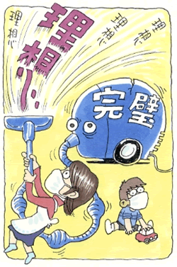

全般性不安障害（不安神経症）2
完璧主義、理想主義との狭間で不安神経症に悩んで
（不安神経症）
田中 美和（仮名）32歳・主婦
教育熱心だった両親
私は、少し歳の離れた姉・兄のいる3人兄弟の末っ子として生まれました。父は教育者で、真面目で冷静な理知的な人でした。母も同じく教育者でしたが、感情表現の豊かな非常に神経質な人でした。良い意味でも悪い意味でも、とても素直な人でしたので、母の機嫌はいつも手に取るようにわかりました。普段から私たち子供をとても大切に思っている事を言葉や態度で伝えてくれてはいましたが、時に子ども達が母の意に添わずに格好悪く無様だった時には、情け容赦なく怒りの感情をぶつけてきました。
両親は、仕事柄もあって揃って「知識量と学歴だけが人を評価する指標である」という共通の価値観を持つ仲良し夫婦でした。二人で、いつも楽しそうに会話を交わしていましたが、偏差値や人の進路についての話がとても多かったように記憶しています。特に母親は、負けん気がとても強い人でしたから、他人に対しては褒める表現よりは嫌味な言い方が多くて、そういう話し方をする母には、とても違和感がありました。そして、人は皆そのように人を評価するものだと幼い頃から思うようになりました。
私達子供に対しても、とにかく成績や進路に関してだけ口うるさく、後は何をやってもおかまいなし、といった具合でした。私は2人の姉兄とは少し歳が離れていましたので、成績が少し落ちたとか、勉強量が足りないとか、そんな理由で姉や兄が厳しく叱られ、手を上げられ、時には床を転がるほど殴られる姿をビクビクしながら見ていました。
中学に入学すると同時に、それまで成績の事をあまり言われなかった私も、両親に管理されるようになりました。成績が良い事が当たり前の事で、悪い時にはノートを両親に見せ、二人から叱責されました。一度、私があまりにも激しく叱られているのを姉が見かねて、窓から逃がしてくれたことがありました。裸足で家から飛び出し、真っ暗な道を複雑な気持ちで歩いた記憶が今でも残っています。こんな状態ですから勉強が楽しいはずもなく、とにかく親から叱られない為だけに机に向かっていました。進路に関しても自分の意向よりも親の意向が当たり前のように優先されましたので、いつも両親の言いなりで一度も自分で決めた事はありません。
反面、勉強以外の面では、非常に甘い両親でした。ですので、子供の頃欲しい物・行きたい所で我慢した事はありませんでした。望んだ事は何でも思い通りに叶えてくれましたし、困った事があれば何でもすぐに解決してくれました。
このような環境のもとで私は、親の価値観に内心では反発を覚えながらも、親の評価を得ること、親に認められることを最大の努力目標として成長しました。
大学入学を機に東京に出てきて、一人暮らしを始めました。最初は戸惑ったものの、両親の束縛から解放されて、精神的にとても自由になった感じがしました。そして、様々な人達と知り合う中で、両親の価値観がかなり偏っており、それが絶対的なものでない事を知りました。しかし、それと同時に、無意識の内に親元を離れた私の努力目標は「親の評価」から「他人からの評価」へと自然に移行していきました。そして、自分でも気付かない心の奥底で、「全てにおいて完璧で、いつも人から評価される人間でなければならない。」という価値観で自分を縛るようになりました。
不安神経症を発症して
東京での学生生活を終え、両親の用意してくれた地元の会社に入社しました。1年程働き、学生時代に知り合った夫と結婚しました。しばらくして長女が、その2年後には長男が生まれました。
長男が生まれて丁度一ヶ月後に、母が入浴中に突然亡くなりました。母への思いは、物心ついてからはずっと反発と依存の混在したものでしたので、悲しみと同時に母を理解してあげられないまま他界させてしまった罪悪感で、その後、長い間母の事を口にする事が出来なくなりました。

母の死から少しして、長男が喘息になり、私の格闘の日々が始まりました。喘息という病気は治るものではなく、上手に付き合っていくという類のものであるにも関わらず、なんとか完治させたいという無理な理想を掲げて無我夢中で努力しました。今振り返ると、この頃から「完璧でなければならない理想」と「現実の状況」の間のギャップが大きいものとなり、思想の矛盾として自分の手におえないものとなっていきました。喘息管理の為に、一日に何度も掃除機をかけることをはじめとして、喘息に良いと言われる事は何でも試しました。それでも、週に何回もの夜中の救急病院通いや入院など、一向に良くなる兆しは見えませんでした。一度、忙しい夫に代わって、子ども達二人を楽しませようと鬼怒川に旅行に連れて行ったことがありました。夜になって、息子が激しい喘息の発作を起こし、救急車を呼びましたが、小児科の先生がいないという理由で断られてしまいました。その夜は「早く朝になって」と祈る気持ちで、一晩中息子を抱いてあかしました。朝になって東京の病院に急いで連れて行ったとき、病院の先生から「死ななくて本当に良かった」と言われ、血の気の引く思いがしました。母の突然の他界と、息子のこの一件で、死というものがとても身近で簡単に起きる事だと心から恐ろしいと感じると同時に、自分の無力さを痛感しました。
その後、息子の喘息管理に必死になる傍らで、幼稚園で父母の会の取りまとめ役をやりました。家では相変わらずの掃除魔で、暇さえあれば掃除機がけや拭き掃除といった家事を徹底的にしていました。それ以外の時間は、幼稚園の役員の仕事に費やし、毎日いっぱいいっぱいでした。ちょうどその頃から、時折頻脈が起きたり、胃の調子が悪かったり、不眠になったりと、それまでの健康に自信のあった自分には考えられない不調に悩まされるようになりました。それでも「出来ない自分・思い通りにいかない現実」の存在に気付くことが出来ずに、ひたすら走り続けていました。そんなある日、スーパーで買い物中に、今まで感じた事のないドーンという大きな不安感と血の引く感じ、手足のしびれといった大きな不安発作に見舞われました。自分で、一体何が起きたのかも良く分からず、なんとか家へ帰り着きました。その状態があまりにも衝撃的で、しばらく外出が出来なくなりました。自分が精神的にバランスを崩しているという自覚はありましたが、精神科への通院やその種の薬を飲む事に強い偏見があったために、漢方や催眠療法といった民間療法に次々と手を出しました。どの療法も、私の場合は殆ど効果がありませんでした。不安感は膨れ上がる一方で、スーパーや子供の学校へ行けない・乗り物に乗れないといった症状が次々と現れ、しまいには近所の道を歩く事さえ、不安発作とその予期不安のために随分長い間出来なくなりました。家から一歩でも出ると、動悸と呼吸困難感、お腹の底から突き上げるような不安感が襲ってきて、家から出る事が恐ろしくなりました。
また、こんな自分を人に見せる屈辱に耐え切れず、家族以外の人に会うのを避けるようになりました。そして、何かの拍子に誰かに会った場合も、隠そうとするあまり他人に対してひどく緊張するようになりました。
ついに病院へ。そしてインターネットで出会った森田療法
子供の学校の事は夫に代わってもらい、買い物は宅配と子ども達にしてもらいながら、なんとか家の中の事だけはこなしていました。しばらくは様子を見ていた夫も、あまりにも変わってしまった私を見かねて、心療内科に連れて行きました。病院には強い偏見があった私ですが、自分のどん底の状況にそれ以外の選択肢はなく、抵抗する力もないまま行きました。処方された薬で少し不安感はおさまりましたが、相変わらず外出が苦痛な日々が続きました。そんな毎日が続く中、インターネットでネットサーフィンをしていた時、岡本記念財団のサイトに出会いました。そこに書かれていた内容を読んで、始めてはっきりと自分の状態がわかりました。「救われるかも」という光明が見え、ずっと人に言えずに辛かった孤独感から解放された気がして、心底ホッとしました。それからというもの、毎日サイトの中の体験フォーラムに愚痴やら質問やら書き込みを繰り返しながら、森田療法の本をむさぼるように読みました。サイトの管理人さんはとても優しく丁寧にご助言下さり、おかげで少しづつ元の生活に戻れるようになりました。そんな毎日を送りながら2，3ヶ月経った頃でしょうか、管理人さんから「1人で森田を学ぶのには限界があるから、発見会（神経症の自助グループ）に入って集談会に行ってはどうか」と言われ、すぐに入会、茗荷谷集談会にお世話になることになりました。
集談会にお世話になって、早いもので2年あまりが経ちました。参加し始めた頃は、ようやっと外出できる状態で、不安も強く最後まで座っていられずに、子供を理由に毎回早退していました。苦しくて愚痴ばかりこぼす私にある先輩会員の方が「毎回とにかくここに来なさい。そうすればだんだん良くなるから。」と優しくおっしゃって下さいました。その言葉を信じて、毎回参加させていただくうちに、気が付けば今は最後まで座っていられるようになっています。そして、参加するたびに、明るく迎えてくださる皆さんからの言葉に、毎回励まされ慰められています。今も、ある先輩会員の方が笑顔でおっしゃる「しゃーないなー」という言葉は、外出中不安発作に見舞われる度に私を支えてくれる呪文のようになっています。
この2年間森田理論に触れて思ったことは、自分の神経症は必然だったということです。
＊素質として神経質気質を持っていたこと。
＊「いつも立派でキチンとしていなければならない」という理想主義に縛られていたこと。
＊何でも自分の思い通りになるという誤った認識を持っていたこと。
＊実際の自分は一人では何も出来ない幼弱性の強い人間であったこと。
これだけの要素が揃った私の場合、神経症の発症はひどく当たり前のことだったとしか言いようがありません。
そして、集談会や様々な場面で教えご助言下さった先輩方のお話から、これからの自分にとって必要なことは、まず何より「自分が不安神経症である」ということを素直に認めることだと思っています。入会後もつい最近まで「こんな情けない自分はイヤだウソだ」と逃げまわってきましたが、事実をみつめて、今の自分の状態を少しでも受けとめる、そんな簡単なところから始めようと思っています。それと共に、自分の中に根強く残る「理想主義」や「幼弱性」についても、自分なりのアプローチがしていけたらと思っています。
高過ぎる「理想主義」については、私の場合の偏りは、事実とはかけ離れた「他人の評価基準」という虚像を自分勝手に作り出し、それを自分の評価基準と同化してしまった所にあると思っています。結果として、常に「他人の目」というフィルターを通して物事を見る私は、有り得ない「完璧な人間」を追い求め続けることになりました。ですから、もし「人から立派だと評価されたい」いう欲があるならば、形の無い理想を追い求めることはやめて、具体的な一つ一つの行動がとても大切だという事がやっとわかってきました。相手の立場になって考える・人の話はきちんと聞く、といった小さな一歩をこれから積み重ねていきたいと思います。
「幼弱性」に関しては、明らかに何でも親や他人に頼ってきた体験不足が元になっていると思いますので、何事からも逃げずに自分の事は人に頼らずに自分でやっていく経験を積んでいきたいと思っています。その中で、自己中心的でわがままな部分や傲慢で依頼心が異常に強い部分も、少し痛い目にあいながら修正されていくのだろうと思います。
入会年数も浅く、恐怖する場面も相変わらず多い私にとっては、とらわれに「なりきる」とか「受け入れる」といった段階はまだまだ先という感じです。ですが、とりあえず苦しいままやるべき事には仕方なくでも手を出し、今やりたいと思った事には躊躇せずにその時に行動していきたいと思っています。森田先生は、「治らないと諦めれば良い」と仰っていますが、いつかそんな境地に到達できる日を夢みて、のんびり焦らずにやっていくつもりです。
話は戻りますが、両親についての考え方も森田療法を学んだおかげで随分変わりました。母に関しては、私と同じような神経質特有の性格を持つ母が、自分の価値観の偏りに気付かぬまま、一生懸命不器用な子育てをしていたのだろうなぁと思えるようになりました。父に関しては、財力も家柄もない父が社会に認められる手段として、学問に頼らざるをえなかった気持ちが今は理解出来ます。もし母が、今も生きていてくれたなら、きっとお互いに良き理解者になれたのではないかと思うと、残念でなりません。